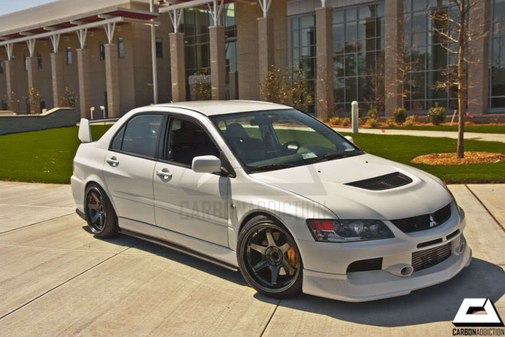

På fritiden brukar jag spela spel och antingen gå
ut eller gå till gymmet. Jag gör inte så mycket på
min fritid. Jag älskar verkligen bilar och motorer,
och jag älskar speciellt japanska bilar, och vissa
tyska. Jag är ett fan av WRC.

This is my favorite car

This is my favorite game

This is my second favorite game